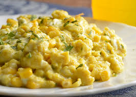

Lanche rápido de ovo mexido
Uma opção prática, saborosa e nutritiva para o café da manhã ou lanche da tarde.
Combina proteínas dos ovos com a praticidade do pão integral.
Ingredientes
- 2 ovos
- 15g de requeijão light
- 1 fatia de pão integral (ou pão de sua preferência)
Modo de preparo
- Em um recipiente, bata levemente os ovos com um garfo.
- Aqueça uma frigideira e acrescente os ovos.
- Mexa em fogo baixo até começarem a cozinhar.
- Adicione o requeijão light e misture até atingir a consistência desejada.
- Sirva sobre a fatia de pão.
Informações nutricionais com pão integral
Por porção, considerando o uso de pão integral:
- Valor energético: 276 kcal
- Carboidratos: 14 g
- Proteínas: 17 g
- Gorduras totais: 17 g
- Fibras alimentares: 2 g
Os valores nutricionais são estimativas e podem variar conforme as marcas e os ingredientes utilizados.
← Voltar